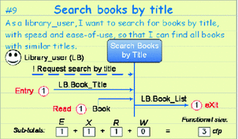
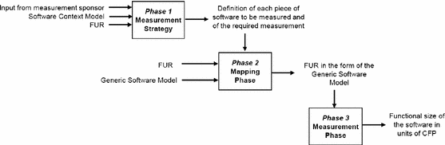
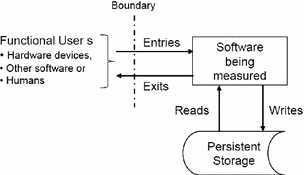
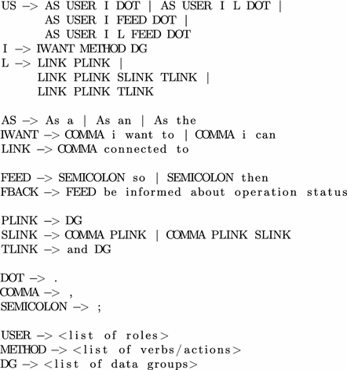
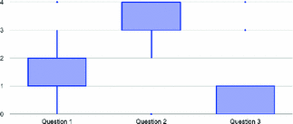

1 Introduction
The area of Software Requirements is concerned with the elicitation, analysis, specification, and validation of software requirements [1]. There are a large number of styles and techniques for writing software requirements, including, for example, requirements list, Use Cases (UC), User Stories (US), and Formal Specification.
The Extreme Programming (XP) software development framework introduced the idea of User Stories (US), which are basically use cases that concisely capture functional requirements. Developers usually split it up requirements into US [2] and typically write user stories on cards to describe each system functionality that the customer desires [3].
User story is one of the most widespread techniques for writing requirements in agile environments. User Stories have gained popularity among agile approaches, being one of the main techniques used when the subject is requirements engineering in agile environments. There is a common template to write user stories, however a number of different extensions have been adding or suppressing information, according to the application context.
Despite this, current requirements specification techniques used in agile software development are customer-oriented and, from the developers point of view, have proven to be insufficient [4]. In other words, there are more information from the customer point of view written in a too high level than from the developers perspective, with some implementation details. Moreover, user stories might reflect in documentation debt [5], which can cause significant impact in terms of maintenance effort and cost in agile software development projects, which drive developers to misunderstanding. Thus, it could be detailed and to continue in high level.
Functional Size Measurement (FSM) was proposed in order to obtain better units of sizing. According to ISO/IEC 14143 [6], FSM was designed to overcome the limitations of earlier methods of software sizing by shifting the focus away from measuring how software is implemented to measuring size in terms of the functions required by the user.
FSM intends to measure software functionality, being independent of technology, platform and individual. Based on defined measurements procedures it is possible to define standard, objective, consistency and comparable results [7].
The Common Software Measurement International Consortium (COSMIC) is a group formed in 1998 which intended to develop the second generation of FSM [8]. The group objective was to develop a method for measuring user requirements in conformity with fundamental software engineering principles and the measurement theory. The method is applicable for measuring business, real-time and infrastructure software [8]. The term COSMIC is used both for the group and the method.
The COSMIC method has been designed to accept extensions for particular domains [9]. A domain for which it has been extended is Agile development. According to [10], the agile guideline has the purpose of providing additional advice beyond the COSMIC Measurement Manual on Agile projects. The COSMIC method is perfectly suited for measuring software evolving through iterations and increments as typically found in Agile development without any adaptation [10].
Sizing software in Agile development requires exactly the same knowledge, principles and rules of the COSMIC Method when used in any other project management method [10].
When sizing user stories using the COSMIC method, Message Sequence Diagrams may be used as shown in Fig. 1. The vertical line represents a functional process and horizontal arrows represent data movements. Entries and Reads are shown as arrows incoming to functional process and Exit and Writes as outgoing arrows, appearing in the required sequence as top-down order [10].

As can be seen, sizing user stories using the COSMIC method is not a difficult task. Nevertheless, a precise size estimation is directly proportional to the level of detail a US is written. Thus, based on the example in Fig. 1, some valuable information may by missed, such as connections between data groups and direct user feedback.
This paper introduces a new template for writing user stories which contains more expressiveness in terms of COSMIC size estimation. The proposed template specify possible connections between system data groups and express clearly the presence of user feedback.
We performed a survey to introduce this new user story template to the COSMIC community. The qualitative survey intended to capture COSMIC users opinion in terms of expressiveness and how valuable it was.
The rest of the paper is organized as follows. Section 2 shows the background of the COSMIC method and existing user stories templates. Section 3 presents the proposed template and its details. Section 4 shows the evaluation process conducted via survey with the COSMIC community and its analysis. Finally, Sect. 6 draws some conclusions and future works.
2 Background
In this section we present the COSMIC method in Subsect. 2.1 and an overview of user story templates in Subsect. 2.2.
2.1 COSMIC Method
The COSMIC method was born from the need to measure requirements from systems such as business application, real-time and infrastructure software, and some types of scientific or engineering software [8]. This necessity comes from some IFPUG technique weaknesses. It has become increasingly difficult to map Albrecht’s function types to modern ways of modelling software requirements, especially for software as services, real-time domain, and infrastructure software [8].
The method is divided in three phases: measurement strategy phase, mapping phase, and measurement phase. These phases and their definition are shown in Fig. 2.

Fig. 2.
The COSMIC measurement process [8]
The Measurement Strategy phase defines what will be measured. It must be defined in the functional user perspective, such as humans, hardware devices, or other software which will interact with the software under measurement. First the measurement purpose is defined, which will lead to defining the scope and functional users [8]. There are five key parameters to determine in this phase:
- Purpose: helps to determine all the following parameters;
- Scope: defines what is included or excluded in the functionality and what are the restrictions;
- Level of composition: pieces of software to be measured, for example, the whole application (level 0), or a primary component in a distributed system (level 1), or a re-usable component in a service-oriented software (level 2);
- Functional users: must be defined for each piece of software. They are humans or things which will send or receive data to or from the software;
- Layers: the software architecture; the piece of software must be confined in one layer.
The Mapping phase consists in creating the functional user requirement COSMIC model, it starts from whatever the artefacts are available. The model is created applying the COSMIC Generic Software Model, which is defined for four principles [8].
The first principle is that a software functionality is composed of functional processes, each functional process corresponds to an event in the functional user world.
The second phase defines that functional processes are consisted of sub-processes, they do only two things, they move and manipulate data. Data movements which move data from functional users into functional processes or vice-versa are called Entries and Exits. Data movements which move data from persistence storage and vice-versa are called Writes and Reads. As may be seen in Fig. 3.
The fourth principle says that each data movement moves a single Data group. Data group is defined as a single object of the functional user interest.
The last principle defines that data manipulation are assumed to be accounted by the associated data movement. Data manipulation are not measured separately.

Fig. 3.
Data movements [8].
The Measurement Phase consists in taking account data movements, each data movement is a unit of COSMIC Function Point (CFP). In this phase they are counted and sum over all functional processes. A single functional process must have at least two data movements and there is no upper size limit. When measuring a software enhancement, it must be identified all data movements added, changed and deleted and sum them over all its functional processes. The minimum of any modification is 1 CFP [8].
2.2 User Story Overview
The User Stories technique is widely used in Agile development. They are characterised as short and high level description of the required functionality written in customer language. The traditional story template is: [1]
“As a <role>, I want to <goal/desire>, so that <benefit>".
User Stories are used in the very early stage during requirements gathering. They contain only enough information to estimate the implementation effort. They should be written in customer language before the implementation, for appropriated acceptance [10].
Besides the traditional one, there other User Stories writing templates. The Table 1 shows some examples.
Template US01 [11] only introduces a specific use of user stories to express usability requirements. There is no relevant difference from the traditional template.
The template US02 [12] also, does not present any significant difference. It only makes explicit that the object must be present, which is a natural practice when using the traditional template.
Template US03 [13] contributes in terms of usability engineering. The last part, which in traditional template is responsible for expressing feedback or user expectation, is specific for Nielsen’s heuristic values, which should be met in the user story.
Template US04 [14] is similar to the traditional template but makes the last part optional. The user story is shorter and does not provide information about feedback or user expectation. It may be useful once maintain only the minimum valuable information.
Template US05 [15] is equivalent to the traditional template but places the benefit first instead of last.
Template US06 [16], also known as “Five Ws”, adds more relevant information from the user perspective, namely, “when” and “where”, compared to the traditional template.
Template US07 [10] only adds information about non-functional requirements found in the functional process. Considering the counting example presented in [10], this information is not relevant for sizing estimation.
Table 1.
Examples of user stories templates.
ID | User story template |
|---|---|
US01 | “As a <role>, I want <usability requirement>” [11] |
US02 | “As a <role>, I want to <action> <object>, so that <business value>” [12] |
US03 | “As a <persona>, I want/need <goal> so that <Nielsen’s heuristic> will be met” [13] |
US04 | “As a <role>, I want <goal/desire>” [14] |
US05 | “In order to <receive benefit> as a <role>, I want <goal/desire>” [15] |
US06 | “As <who> <when> <where>, I <what> because <why>.” [16] |
US07 | “As a <role>, I want to <goal/desire>, <non-functional requirement>, so that <benefit>” [10] |
3 COSMIC User Story Standard
Based on the user story templates shown in Table 1, we can observe some weaknesses and limitation.
First of all, none of existent templates provide information about connections between data groups or entities. This information is considerably important in terms of COSMIC estimation, once data movements are detected also considering connections or links present in the functional process.
Furthermore, current templates, besides providing a place for result or user expectation specification, it is not specific for feedback. Thus, it may be used to express user expectation, which might not be related to the functional process, for example, “As a user, I want to receive by email daily news, so that I am always up to date to the news.”
We propose a template called COSMIC User Story Standard (CUSS). The main improvement is adding information about connections among the data groups manipulated in the functional process. Other improvement is related to user feedback. Some functional processes provide feedback to user, while others may not provide, so it is clearly presented in US.
The CUSS template is the following:
“As a <who/role>, I want to <what>, linked to <connections>; so/then be notified about operation status.”
where:
- <who/role> is the Functional User;
- <what> is the verb the represents the action or the functional process;
- <connections> represents other data groups involved in this functional process;
- “so/then be notified about operation status” is optional statement and represents the functional user feedback.

Fig. 4.
Context-free grammar
The corresponding “context-free grammar” is presented in Fig. 4. The terminal symbols are As a, As an, As the, I want to, I can, connected to, so, then, ., ,, ;, and, be informed about operation status, plus any words representing a role, a verb, or a data group. The non-terminal symbols are I, L, AS, IWANT, LINK, FEED, FBACK, PLINK, SLINK, TLINK, DOT, COMMA, SEMICOLON, USER, METHOD, DG. The initial symbol is US.
Examples are presented below.
- As a Manager, I want to remove a book.
- As an user, I can update books; so be notified about operation status.
- As a Manager, I want to add a new book, connected to author.
- As the Manager, I want to save books, connected to author and publishing company.
- As a Manager, I want to create books, connected to author and publishing company; then be notified about operation status.
4 Evaluation
We performed two evaluation strategies. The first one is a survey that was created to raise the COSMIC community opinion about the new template and its advantages and disadvantages. The second evaluation is an example of the size estimation result after decomposing a requirement using the traditional US template and using CUSS template.
4.1 Survey
The survey was created to retrieve the COSMIC community opinion about the proposed US template. The survey is divided in 3 parts. The first part is composed by questions to identify the respondent profile. The second part is composed by open questions about current templates, the proposed template and the impact in the agile aspect. The last part are closed questions in likert scale [17], where 0 is “Disagree Strongly” and 4 is “Agree Strongly” about the same questions from second part.
The survey had 22 responses. The Table 2 shows the respondents relation between certificate holders and years of experience with COSMIC.
Table 2.
Respondents distribution into groups.
Experience | Certified | Non certified |
|---|---|---|
1 Year | 0 | 1 |
2 Years | 1 | 1 |
3 Years | 4 | 0 |
4 Years | 5 | 0 |
5 Years | 5 | 0 |
6 Years | 1 | 0 |
8 Years | 2 | 0 |
10 Years | 1 | 0 |
15 Years | 1 | 0 |
20
|
2
|
Skipping to the third part of the survey, Fig. 5 show the boxplot in likert scale for the three statements, Question 01 is “Current Templates provide enough information in term of COSMIC Sizing.” Question 02 is “COSMIC User Story Standard provides greater expressiveness in term of COSMIC Sizing.” Question 03 is “COSMIC User Story Standard Template compromises the agility aspect in a process.”

Fig. 5.
First statement
Based on this chart, we can observe that concerning to current US templates expressiveness, the concentration is around disagree moderately with an outlier in agree strongly, in other words, we can infer that current US templates do not have good expressiveness in terms of COSMIC sizing.
Moreover, it is observable that regarding to expressiveness increasing in CUSS, the concentration is in agree strongly, based on this, we can conclude that CUSS, is a step forward to have a better US COSMIC size estimation.
Further more, the statement about CUSS to disturb the agile aspect, the chart shows that concentration is around disagree strongly, in other words, we can conclude that there is no heaviness, from agile point of view, in the information added in COSMIC User Story Standard.
Returning to the second part of the survey, we conducted an content analysis to analyse the answers with a deep interpretation.
The first open question is “Do you think that there is a lack of information in current User Story Templates? Please discourse about your answer.”, the content analysis is divided in two groups, “Yes” and “No” answers. The “No” answers had not further discourse, so there were no classes in it. The “Yes” answers which had further discourse, were divided in four classes. Table 3 present the content analysis for the first open question. The percentage is over all answers for this question.
Table 3.
Content analysis for first question responses.
Group | Class | Percent. |
|---|---|---|
No | - | 22.7% |
Yes | “Yes, but it is inevitable, expected” | 13.6% |
Yes | “Yes, it is designed to provide basic information” | 27.3% |
Yes | “Yes, it misses information” | 13.6% |
Yes | Just Yes | 22.7% |
Based on answers related to lack of information in current US templates, we can observe that almost 80% of respondents agree that there are gaps in these templates. From this group, around a half of respondents see no problem in this information lack, so, around a half from those ones that agree that there are gaps in current US template see that it could provide more information for COSMIC size estimation.
The second open question is “In your opinion, Cosmic User Story Standard helps to identify more movements than other templates? Please discourse about your answer.” The content analysis, was also, based on “Yes” and “No” answers end their further discourses. The “No” answers were divided in two classes and “Yes” answers were also divided in two classes as shown in Table 4.
Table 4.
Content analysis for second question responses.
Group | Class | Percent. |
|---|---|---|
No | “User Story is useless, there is no relevance in it” | 13.6% |
No | “I prefer other template” | 4.5% |
Yes | “Yes, it is a major step forward” | 18.2% |
Yes | “Yes, it is good, great, I like it” | 63.6% |
Based on the second question content analysis, we can conclude that over 80% agree that CUSS could help to identify more movements. From the percentage, around three-quarter classified it as “good” or “great” and one fourth classified it as “a step forward for US COSMIC sizing”. According to this, we can conclude that CUSS may be well received by COSMIC community, and in fact, it may help in early COSMIC size estimation.
The third questions is “Do you think that this addition of information compromises the agile aspect? Please discourse about your answer.” Likewise, we considered “Yes” and “No” answers, and classified its discussion. Table 5 presents the content analysis for third question.
Table 5.
Content analysis for third question responses.
Group | Class | Percent. |
|---|---|---|
No | - | 31.8% |
No | “somehow”, “Why?” | 27.3% |
No | “there is no relation”, “agile keeps agile” | 27.3% |
No | “the addition of information is light weight” | 9.1% |
Yes | “Certainly” | 4.5% |
Based on Table 5, about 95% of the respondents believe that information added in proposed template does not compromise the agile aspect of user story, in other words, the information added is light weight and the agile aspect is not corrupted.
Considering the first question, we can observe in content analysis that among 65% of the respondents considered that there is information lack in current user story templates, but it is not a problem since user story is designed to express only basic information.
The content analysis for the second question, among 80% consider that the proposed template is a good improvement in terms of COSMIC sizing, almost 20% considered it a major step forward.
For the third question, based on the content analysis among 95% of the respondents considered that the information added in proposed user story template does not compromise the agile aspect. Considering these answers, almost 60% sad just “No” or were not clear about what they think, while among 37% considered that it is not a problem.
4.2 Example
The second evaluation consists in an example that shows how it is different applying the traditional US template versus applying the proposed template when decomposing a requirement written as epic. The main difference can be observed in its value in CFP.
The requirement below is about a simple library system.
- The library system should allow a librarian user maintain authors, books. When a new book is created or edited the author and publisher information should come from the ones registered in the system. The manager user is also able to activate and deactivate registered books. The manager user can also list all booked books per client. The system should allow that client users book and/or rent books. The librarian user can also send emails about new books arrival.
The Table 6 presents the user stories written using the traditional template. The Table 7 shows user stories written using the proposed template.
Table 6.
Example using traditional template
ID | US | CFP |
|---|---|---|
US01 | As a Librarian, I want to register a new book, so that it is available for booking and/or loan | 2 |
US02 | As a Librarian, I want to remove books | 2 |
US03 | As a Librarian, I want to list all books | 3 |
US04 | As a Librarian, I want to update books, so that I can left it up to date | 4 |
US05 | As a Librarian, I want to register a new author, so that it can be user for book register | 2 |
US06 | As a Librarian, I want to remove an author | 2 |
US07 | As a Librarian, I want to list all authors | 3 |
US08 | As a Librarian, I want to update an author, so that I can left it up to date | 4 |
US09 | As a Manager, I want to activate a book, so that clients can book or rent it | 2 |
US10 | As a Manager, I want to deactivate a book, so that clients cannot book or rent it | 2 |
US11 | As a Manager, I want to list all booked books | 3 |
US12 | As a Client, I can create a new book booking, so that I can rent it | 3 |
US13 | As a Client, I can create a new book rental, so that I can rent books | 3 |
US14 | As a Librarian, I want to send emails about new books arrival | 2 |
Total
|
37
|
Table 7.
Example using CUSS
ID | US | CFP |
|---|---|---|
US01 | As a Librarian, I want to register a new book, connected to author and publisher; then be informed about operation status | 7 |
US02 | As a Librarian, I want to remove books; then be informed about operation status | 3 |
US03 | As a Librarian, I want to list all books, connected to author and publisher | 7 |
US04 | As a Librarian, I want to update books, connected to author and publisher; then be informed about operation status | 9 |
US05 | As a Librarian, I want to register a new author; then be informed about operation status | 3 |
US06 | As a Librarian, I want to remove an author; then be informed about operation status | 3 |
US07 | As a Librarian, I want to list all authors | 3 |
US08 | As a Librarian, I want to update an author; then be informed about operation status | 5 |
US09 | As a Manager, I want to activate a book; then be informed about operation status | 3 |
US10 | As a Manager, I want to deactivate a book; then be informed about operation status | 3 |
US11 | As a Manager, I want to list all booked books, connected to clients | 5 |
US12 | As a Client, I can create a new book booking, connected to client and book; then be informed about operation status | 6 |
US13 | As a Client, I can create a new book rental, connected to client and book; then be informed about operation status | 6 |
US14 | As a Librarian, I want to send emails about new books arrival | 2 |
Total
|
65
|
We can observe that there is a significant difference in the total size of CFP units.
When using the CUSS template the number of CFP counted is 65, when using the traditional template the number of CFP counter is 37. This difference is related to detail level in each template. The proposed template add information which expose more interaction and consequently more movements.
If the estimation is performed based only on the information available in the traditional template, the professional should make assumptions about user feedback and possible connections between data groups. The problem is that these assumption may not be true, so the estimation is over or under precise.
The information added in the proposed template might seem heavy weight, mainly if we are talking about writing US in requirements gathering. But the objective of the CUSS template is to be clear about valuable information in terms of COSMIC sizing.
Moreover, having more information in the very early development stage helps to have a more precise estimation. It is important for managers that have to control and estimate cost, time, team and etc.
5 Threats to Validity
The survey was anonymous and open to community, so anyone could respond it, however, it was published just to COSMIC users and shared via email to specific group of practitioners. Almost 90% of subjects are COSMIC certified, this factor increase answers quality and reliability, and even for those ones which are not certified the answers consistency was satisfactory. We considered all answers, due to even non certified may have significant contribution. But even so, all subjects have at least one year of experience with COSMIC in industry.
The survey was conducted comparing well known user story templates to the proposed one. In the first survey step, the subjects could see examples of use and the expressiveness difference between well known templates and the proposed template.
We made a cross validation using two approaches to answer the same questions. So, each question was asked twice via discursive way and likert scale [17]. Based on this double check, was could guarantee consistency between the answers. In other words, we double checked if discursive answers was according to likert [17] answer, finding solid results.
The COSMIC estimation was performed by a junior professional. So, there may be not as precise as an expert certified COSMIC professional estimator.
6 Conclusion and Future Work
This work presented a new template for user story writing. This template is called COSMIC User Story Standard and its purpose is to elevate the user story expressiveness in terms of COSMIC size estimation.
The information added in this template is related to connections among data groups in the estimated system, also there is an improvement related to user feedback. The added information is lightweight and does not make the user story saturated of information.
In order to raise the need to a new user story writing template, we developed a survey with COSMIC community to explore its possibilities and get feedback from potential users. The survey answers were analysed under content analysis. The result is enthusiastic, the template was well received by COSMIC community.
Survey content analysis allows us to realise that the information lack in user story is perceived by COSMIC users, but not necessarily it is seen as a huge problem.
Furthermore, content analysis also allows us to conclude that the proposed template is valuable for COSMIC community being classified as great and as a step forward in terms of COSMIC user story estimation.
Besides, we developed an example of the difference between the estimated size from user stories decomposed from the same epic and written in both, the traditional and the proposed, templates. The difference between the total CFP estimated size using the proposed template and the traditional is huge significant.
As future work, we aims to develop a software based on proposed template for automated grammar validation and verification. Moreover, we have intention to use this template as source to automated COSMIC size estimation of user stories. Furthermore, we pretend to perform empirical evaluation of the proposed template with experiments and case studies.
Acknowledgments
We thank mister Frank Vogelezang who provided insight and expertise that greatly assisted the research.

Open Access This chapter is licensed under the terms of the Creative Commons Attribution 4.0 International License (http://creativecommons.org/licenses/by/4.0/), which permits use, sharing, adaptation, distribution and reproduction in any medium or format, as long as you give appropriate credit to the original author(s) and the source, provide a link to the Creative Commons license and indicate if changes were made.
The images or other third party material in this book are included in the book's Creative Commons license, unless indicated otherwise in a credit line to the material. If material is not included in the book's Creative Commons license and your intended use is not permitted by statutory regulation or exceeds the permitted use, you will need to obtain permission directly from the copyright holder.
References
1.
Abran, A., Moore, J.W., Bourque, P., Dupuis, R., Tripp, L.L.: Guide to the Software Engineering Body of Knowledge: 2004 Version SWEBOK. IEEE Computer Society, Washington, D.C. (2004)
2.
Taibi, D., Lenarduzzi, V., Janes, A., Liukkunen, K., Ahmad, M.O.: Comparing requirements decomposition within the Scrum, Scrum with Kanban, XP, and Banana development processes. In: Baumeister, H., Lichter, H., Riebisch, M. (eds.) XP 2017. LNBIP, vol. 283, pp. 68–83. Springer, Cham (2017). https://doi.org/10.1007/978-3-319-57633-6_5Crossref
3.
Maurer, F., Martel, S.: Extreme programming. Rapid development for web-based applications. IEEE Internet Comput. 6(1), 86–90 (2002)Crossref
4.
Medeiros, J., Vasconcelos, A., Goulão, M., Silva, C., Araújo, J.: An approach based on design practices to specify requirements in agile projects. In: Proceedings of the Symposium on Applied Computing, pp. 1114–1121. ACM (2017)
5.
Mendes, T.S., de F Farias, M.A., Mendonça, M., Soares, H.F., Kalinowski, M., Spínola, R.O.: Impacts of agile requirements documentation debt on software projects: a retrospective study. In: Proceedings of the 31st Annual ACM Symposium on Applied Computing, pp. 1290–1295. ACM (2016)
6.
ISO: Information technology—software measurement—functional size measurement (2012)
7.
Akca, A., Tarhan, A.: Run-time measurement of cosmic functional size for Java business applications: initial results. In: 2012 Joint Conference of the 22nd International Workshop on Software Measurement and the 2012 Seventh International Conference on Software Process and Product Measurement (IWSM-MENSURA), pp. 226–231, October 2012
8.
Abran, A., Baklizky, D., Davies, L., Fagg, P., Gencel, C., Lesterhuis, A., Londeix, B., Soubra, H., Symons, C., Villavicencio, M., Vogelezang, F., Woodward, C.: Introduction to the COSMIC method of measuring software. Common Software Measurement International Consortium (2014)
9.
Abran, A., Baklizky, D., Desharnais, J.M., Fagg, P., Gencel, C., Symons, C., Ramasubramani, J.K., Lesterhuis, A., Londeix, B., Nagano, S.I., Santillo, L., Soubra, H., Trudel, S., Villavicencio, M., Vogelezang, F., Woodward, C.: COSMIC measurement manual. Common Software Measurement International Consortium (2015)
10.
Berardi, E., Buglione, L., Cuadrado-Collego, J., Desharnais, J.M., Gencel, C., Lesterhuis, A., Santillo, L., Symons, C., Trudel, S.: Guideline for the use of COSMIC FSM to manage agile projects. Common Software Measurement International Consortium (2011)
11.
Moreno, A.M., Yagüe, A.: Agile user stories enriched with usability. In: Wohlin, C. (ed.) XP 2012. LNBIP, vol. 111, pp. 168–176. Springer, Heidelberg (2012). https://doi.org/10.1007/978-3-642-30350-0_12Crossref
12.
Zeaaraoui, A., Bougroun, Z., Belkasmi, M.G., Bouchentouf, T.: User stories template for object-oriented applications. In: 2013 Third International Conference on Innovative Computing Technology (INTECH), pp. 407–410. IEEE (2013)
13.
Choma, J., Zaina, L.A.M., Beraldo, D.: UserX story: incorporating UX aspects into user stories elaboration. In: Kurosu, M. (ed.) HCI 2016. LNCS, vol. 9731, pp. 131–140. Springer, Cham (2016). https://doi.org/10.1007/978-3-319-39510-4_13Crossref
14.
Cohn, M.: Advantages of the “as a user, i want” user story template (2008). https://www.mountaingoatsoftware.com/blog/advantages-of-the-as-a-user-i-want-user-story-template. Accessed 9 Sept 2017
15.
Matts, C.: Feature injection: three steps to success (2011). https://www.infoq.com/articles/feature-injection-success. Accessed 9 Sept 2017
16.
Pupek, D.: Writing user stories the 5 Ws way (2008). http://blog.agilejedi.com/2008/03/writing-user-stories-5-ws-way-writing.html. Accessed 9 Sept 2017
17.
Likert, R.: A technique for the measurement of attitudes. Arch. Psychol. 22, 1–55 (1932)